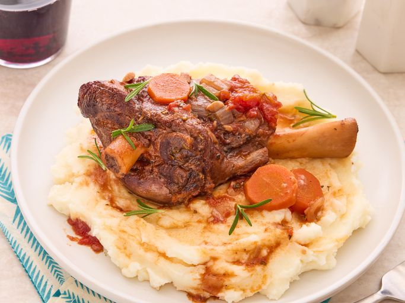

Home
Lamb Shank

Lamb shanks braised in red wine with fresh rosemary, garlic, and tomatoes. Excellent served with polenta or roasted garlic mashed potatoes, my family’s favorite, to soak up the wonderful sauce. This is a fantastic dish to make for company, as all the prep work is done at the beginning. All you have to do is wait!
Ingredients:
- 4 Lamb Shanks
- 1/4 cup of Olive Oil
- 1/2 cup of Red Wine
- 1/2 cup of Beef Broth
- 1/2 cup of Diced Tomatoes
- 1/2 cup of Chopped Onion
- 1/2 cup of Chopped Carrots
- 1/2 cup of Chopped Celery
- 1/2 cup of Chopped Garlic
- 1/2 cup of Chopped Fresh Rosemary
- 1/2 cup of Chopped Fresh Thyme
- 1/2 cup of Chopped Fresh Parsley
- Salt and Pepper to taste
Step By Step:
- Preheat oven to 350 degrees F (175 degrees C).
- Season lamb shanks with salt and pepper.
- Heat olive oil in a large oven-safe pot over medium-high heat.
- Brown lamb shanks on all sides, about 10 minutes. Remove and set aside.
- Add onions, carrots, celery, and garlic to the pot and cook until softened, about 5 minutes.
- Add red wine, beef broth, diced tomatoes, rosemary, thyme, and parsley.
- Bring to a boil, then reduce heat and cover.
- Return lamb shanks to the pot, cover, and transfer to the preheated oven.
- Bake for 2 to 2 1/2 hours, or until the meat is tender and falling off the bone.
- Plate up hot with your choice of sides.
- Serve and enjoy!